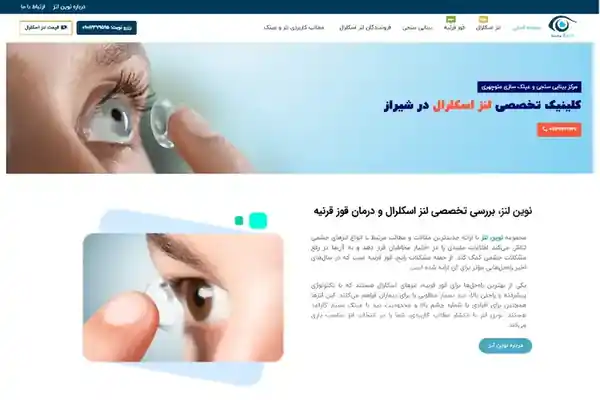
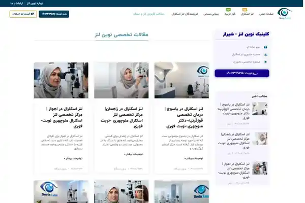

Anteprime locali incluse nel portfolio: home page e pagina contenuti/articoli.
Contesto
Il progetto richiedeva un sito capace di organizzare contenuti specialistici, pagine informative e moduli di contatto in modo leggibile e facilmente aggiornabile.
La sfida
Gestire un volume crescente di contenuti senza perdere chiarezza, mantenendo una struttura utile sia agli utenti sia alla SEO.
Il mio contributo
- Progettazione completa del sito e della sua architettura informativa in WordPress.
- Creazione di sezioni editoriali, pagine tematiche e moduli di contatto.
- SEO on-page e tecnica con Rank Math e Google Search Console, inclusi metadata, linking interno e indicizzazione.
- Manutenzione tecnica: plugin, database, sicurezza, backup, aggiornamenti e troubleshooting.
Risultato / consegna
Un sito strutturato per sostenere consultazione dei contenuti, raccolta di contatti e gestione SEO nel tempo.
Il case study descrive esclusivamente il lavoro svolto da me nel periodo indicato. Dove il mio contributo era solo SEO, questo è dichiarato esplicitamente.